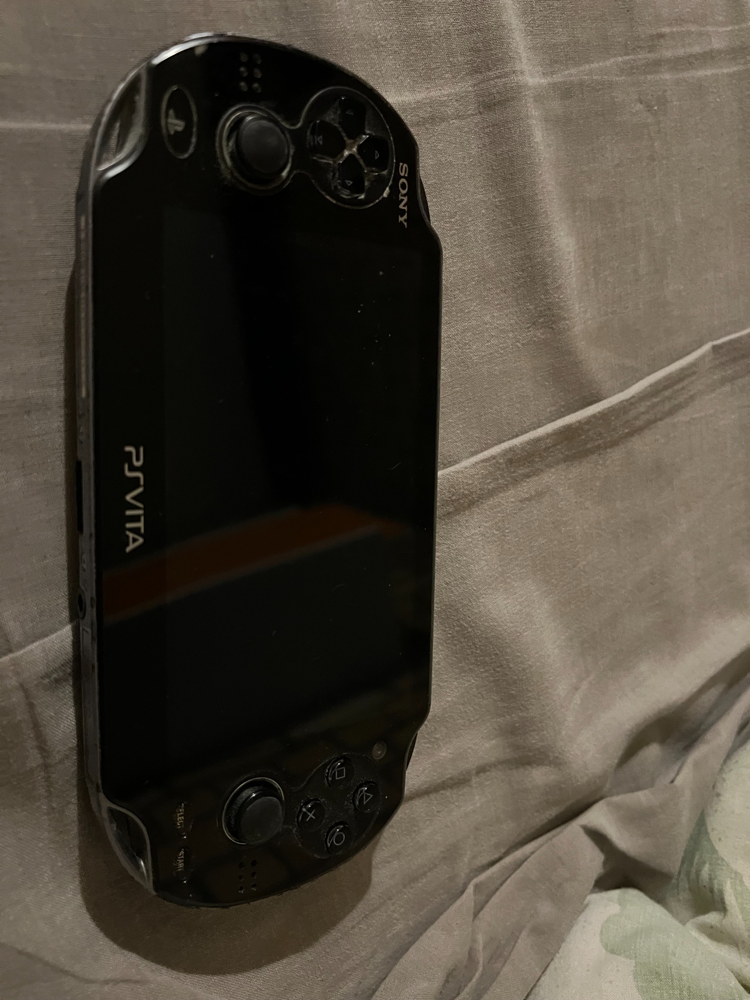
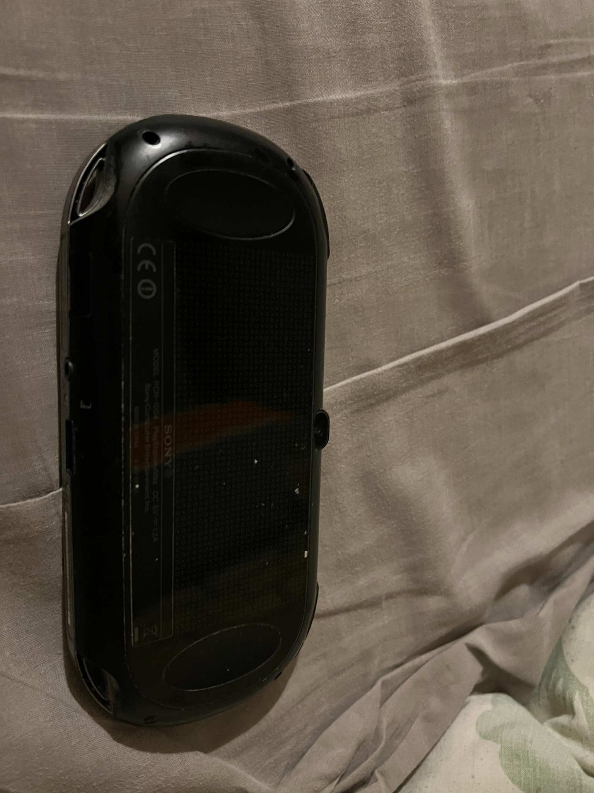

Il y a maintenant deux ans, j’ai trouvé dans un marché une vieille PSVita.
Vu le prix, je me suis dit que cela pouvait être une bonne affaire.
Une fois achetée, les problèmes ont commencé : les joysticks étaient hors service,
tout comme les boutons de droite.
J’ai commandé les pièces nécessaires sur internet, y compris une nouvelle batterie,
car celle d’origine était fortement gonflée. Après avoir remplacé tous ces éléments,
la console ne démarrait toujours pas.
J’ai donc dû changer le firmware de la PSVita. Ensuite, j’ai installé divers logiciels
pour partitionner sa mémoire afin de pouvoir y accéder, même si le firmware venait à lâcher à nouveau.
Elle fonctionne encore aujourd’hui, et je l’utilise pour émuler de vieilles consoles.

